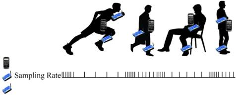
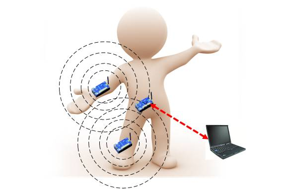

Projects
AdaSense: Adapting Sampling Rates for Activity Recognition with On-body Sensors (RTAS 2013)

In
a Body Sensor Network (BSN) activity recognition system, sensor
sampling and communication quickly deplete battery reserves. While
reducing sampling and communication saves energy, this energy savings
usually comes at the cost of reduced recognition accuracy. To
address this challenge, we propose AdaSense, a framework that reduces
the BSN sensors sampling rate while meeting a user-specified accuracy
requirement. AdaSense utilizes a classifier set to do either
multi-activity classification that requires a high sampling rate or
single activity event detection that demands a very low sampling rate.
AdaSense aims to utilize lower power single activity event detection
most of the time. It only resorts to higher power multi-activity
classification to find out the new activity when it is confident that
the activity changes. Furthermore, AdaSense is able to determine the
optimal sampling rates using a novel Genetic Programming algorithm.
Through this Genetic Programming approach, AdaSense reduces sampling
rates for both lower power single activity event detection and higher
power multi-activity classification. With an existing BSN dataset and a
smartphone dataset we collect from eight subjects, we demonstrate that
AdaSense effectively reduces BSN sensors sampling rate and outperforms
a state-of-the-art solution in terms of energy savings.RadioSense: Exploiting Wireless Communication Patterns for Activity Recognition with Body Sensor Nodes (RTSS 2012)

Automatically
recognizing human activities in a body sensor network (BSN) enables
many human-centric applications. Many current works recognize human
activities through collecting and analyzing sensor readings from
on-body sensor nodes. These sensing-based solutions face a dilemma. On
one hand, to guarantee data availability and recognition accuracy,
sensing-based solutions have to either utilize a high transmission
power or involve a packet retransmission mechanism. On the other hand,
enhancing the transmission power increases a sensor node's energy
overheads and communication range. The enlarged communication range in
consequence increases privacy risks. A packet retransmission mechanism
complicates on-body sensor nodes' MAC layer and hence increases energy
overheads.In contrast to the sensing-based solutions, we build RadioSense, a prototype system that exploits wireless communication patterns for BSN activity recognition. Using RadioSense, we benchmark three system parameters (transmission (TX) power, packet sending rate, and smoothing window size) to design algorithms for system parameter selection. The algorithms aim to balance accuracy, latency, and energy overheads. In addition, we investigate the minimal amount of training data needed for reliable performance. We evaluate our RadioSense system with multiple subjects' data collected over a two-week period and demonstrate that RadioSense achieves reliable performance in terms of accuracy, latency, and battery lifetime.